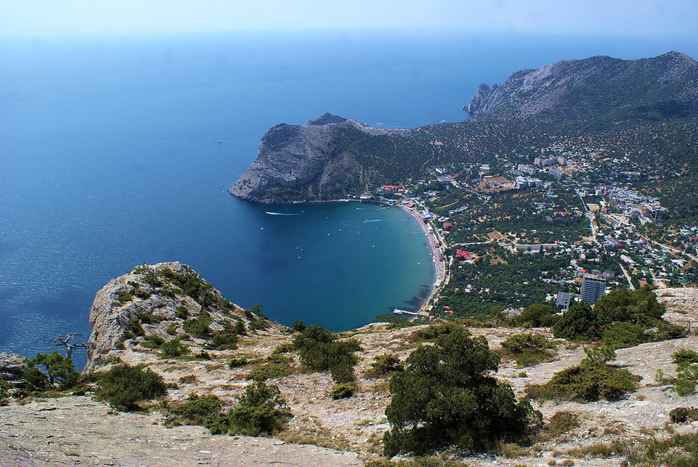
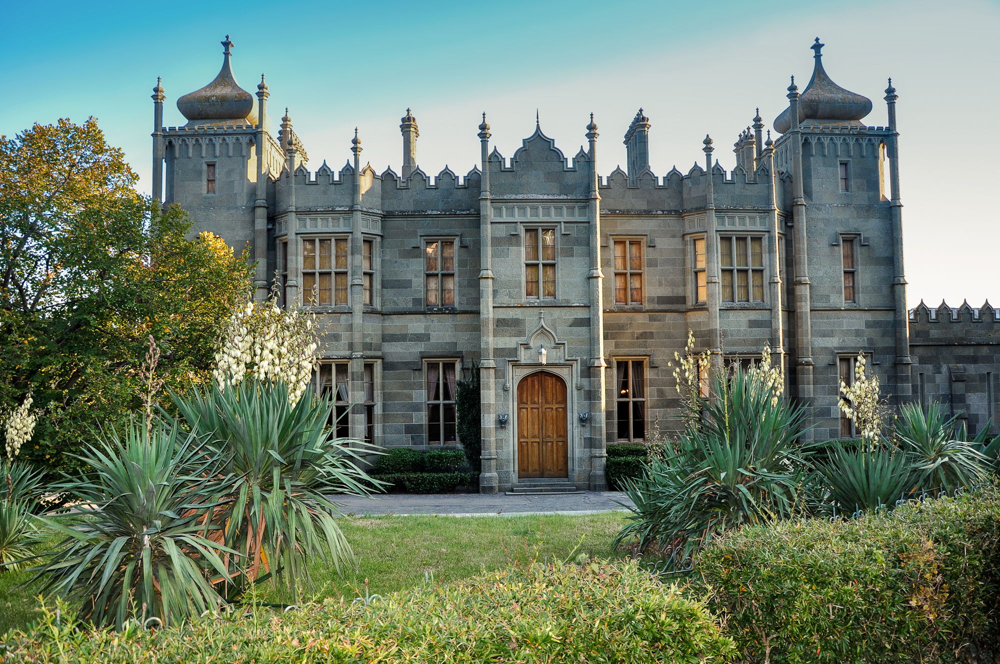
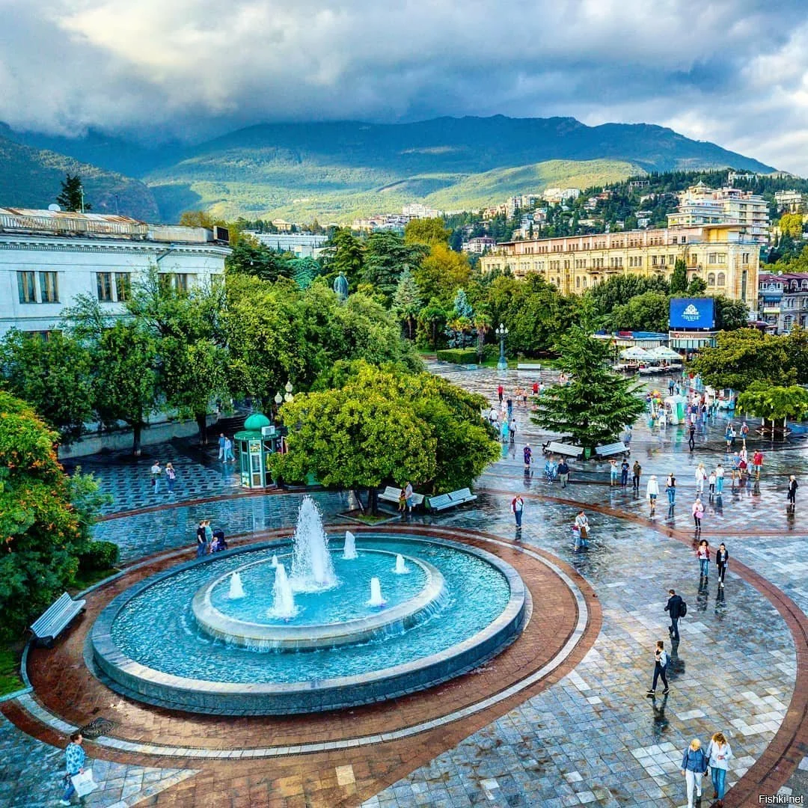

Крым
Полуостров в северной части Чёрного моря, с северо-востока омывается Азовским морем. Большая часть полуострова является объектом территориальных разногласий между Россией, контролирующей её с марта 2014 года, и Украиной.

Воронцовский дворец
Расположен в г. Алупка у подножия горы Ай-Петри. Построен из диабаза, который добывался неподалеку. В настоящее время во дворце находится музей. При Воронцовском дворце находится парк - памятник садово-паркового искусства.

Ялта
Курорт и порт на Южном берегу Крыма. Различают собственно город и так называемую Большую Ялту, территорию протяжённостью более 70 км, включающую Ялту, Алупку и множество посёлков.